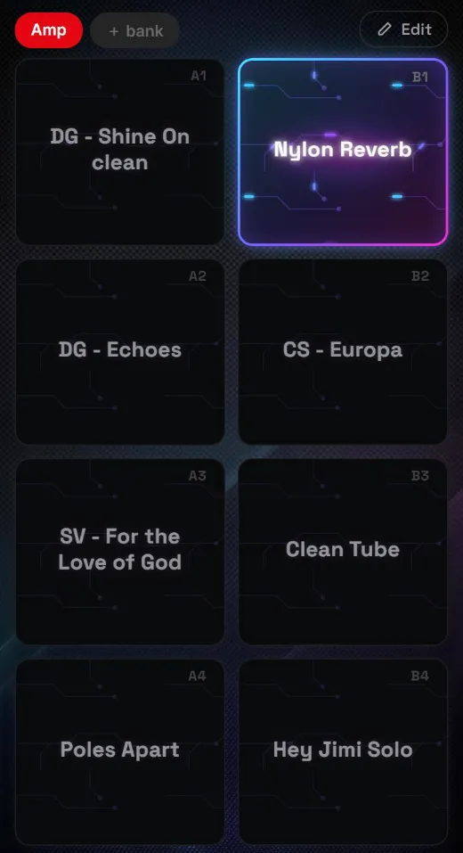
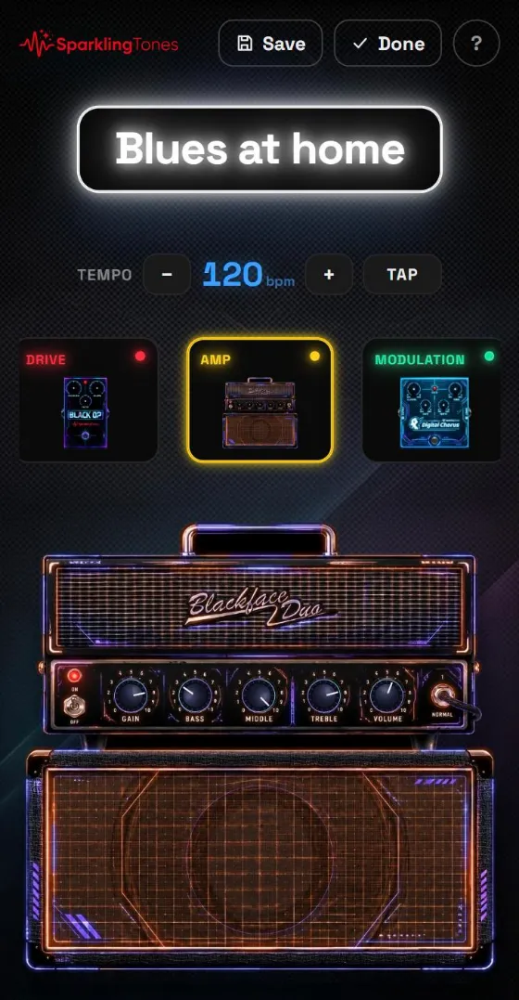
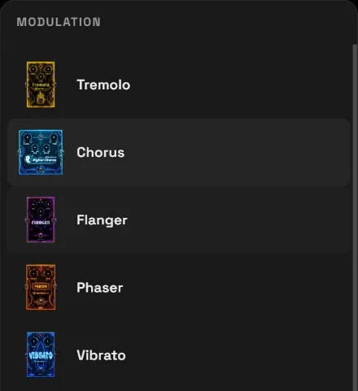
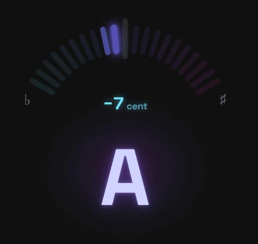

Before you start
What you need, and how to put it on your phone.
What you need
- A Spark 2 amplifier (the Spark NEO works too, see further down).
- Chrome, Edge or Opera, on an Android phone or a computer: these are the browsers that can talk to Bluetooth.
- No account, no sign-up: the library lives inside the browser you use.
On iPhone and iPad the amp won't connect, with any browser: Apple doesn't allow Bluetooth for web pages. The library still works in full — browsing, searching, organising, importing, exporting.
Putting it on your phone
- Open the app in Chrome on your phone.
- If the Install strip appears, tap it. Otherwise: Chrome's menu ⋮ → Add to Home screen / Install app.
- From then on it opens like a real app, full screen, and works without a network: at a gig you don't need Wi-Fi.
When a new version comes out, the app tells you by itself with a strip at the bottom.
Connecting the amp
One tap, and the app knows what's inside the amplifier.
- The logo: from anywhere in the app, one tap here takes you back to the presets.
- The amp badge: it says Connect when the amp isn't there; when it is, it shows its name with a green dot. Tap it to reread the slots, import the sound that's playing or disconnect.
- Presets, Live and Pedal, in the bar at the bottom, which is on every page: you leave a page by tapping another item. Android's back button also takes you back to the presets.
- More: the menu with everything else, including this guide.
How to connect
- Switch on the amp and your phone's Bluetooth.
- Tap Connect. The browser opens a small window with the nearby devices: choose Spark 2 and confirm.
- The badge turns green with the amp's name, and the app reads the amp's presets by itself. In the log at the bottom of the page you see the names arrive one by one.
One master at a time. If the amp is connected to Positive Grid's official app (or to the pedal), it won't show up here. Close the other app, or switch the amp off and on, and try again.
The log at the bottom of the presets screen tells you everything that happens: what was sent, what the amp answered, what went wrong. It's the first place to look.
The presets screen
What's inside the amp on top, everything else below.
- HW PRESETS: the eight presets saved in the amp, four per row. Bank A on top, in red; bank B below, in green, like the LEDs on the amp. A slot the app hasn't read yet says not read; if you've never connected the amp, there's Connect instead of the slots.
- Search and filters: see below.
- The library: all your other presets, with no limit. A preset is either on top or below, never in both places. The coloured stripe on the left is the sound family (blue clean, red drive…): you recognise it without reading.
- ▶ plays that preset on the amp straight away, without touching any slot. It's the quickest way to try one.
Tap a preset — on top or below — to open its card.
If you write a new preset into a slot, the one that was there isn't lost: it moves down to the library with its tags and notes.
Searching and sorting
- The search looks at name, notes, categories and the effects too: «gilmour delay» finds the presets that have both words somewhere.
- The icon at the end of the box sorts by name, recently added, recently changed, or sound family.
- The chips below filter by sound family (the ones with a dot) and by category; the number says how many presets there are. A family and a category together add up: «Drive» and «Pink Floyd» are the Pink Floyd drives.
The preset card
Everything you do with a preset is in here.
- Play · Tweak, the two you use most. Play makes the preset sound (like ▶). Tweak opens the knobs.
- The other actions. Copy makes a copy to change — it's the right way to create a new preset. Put in a slot writes it into the amp: choose the slot from the list, and from then on it's in the amp, even with the phone off. Add to live bank adds it to the first free place in a live bank, without touching the amp (it appears once you have at least one bank). Delete removes it from the library (it asks first, and the amp is not touched).
- Family, categories and notes stay closed, and each row says what's inside. Tap one to open it: family and categories go on and off with a tap, notes you type.
When you open one of the slots on top there's also Select A1 (or whichever slot it is): it tells the amp to switch to that slot, without writing anything.
You change the name with the pencil ✎ next to it. Careful: the amp keeps the old name until you write the preset into a slot again.
The card closes with the ✕, by tapping outside it, or with another tap on Presets.
▶ / Play — trying
The preset plays, but no slot changes. The amp's LED blinks: it means it's playing a preset that came from the phone.
Switch the amp off and everything is back as it was. Use it as much as you like.
Put in a slot — writing
The preset goes into the amp, in the chosen slot, and replaces what was there. The app asks for confirmation and tells you which one you're overwriting.
The old one isn't lost: it stays in the library and shows up again in the list below.
Getting organised
Two different ways of grouping, and all the ways presets come in.
Sound family — what kind of sound it is
One per preset, chosen on the card. Its colour is the stripe to the left of the name in the library and the dot in the filters. A preset with no family has no colour. The colours are yours to change: More → Categories, tap the colour.
Categories — the style, or the song
As many as you like per preset. You create them from the card (＋ new…) or from More → Categories, and they become the chips that filter the library. Deleting a category removes it from the presets; the presets stay.
How presets get into the library
📡 Reread the slots
Tap the amp badge at the top. It rereads the slots. It already happens by itself every time you connect.
🎛️ Import the sound that's playing
From the amp badge at the top. It takes the sound the amp is making right now — even if you changed it by turning the real knobs — and saves it in the library.
📦 Import a file
More → Settings and backup. The official app's
preset_backup.zip, a single preset exported from there, or a backup of this app.
📄 Copy
From a preset's card: a copy to bend however you like, starting from a sound that works.
Your work isn't lost. If a preset you already have comes in again (the same preset reread from the amp, or imported again), only its sound is updated: the library name, family, categories and notes stay yours. And a preset with the same name as one you already have doesn't come in twice.
Playing live
The Live view: big buttons, to tap without looking too hard.

- The banks. Amp is the amp's eight slots, always up to date. The others are yours: ＋ bank creates a new one, with eight places.
- The button that's playing lights up: a blue, purple and pink gradient border, a pulsing glow and current running along the circuit tracks. The others stay darker, with a thin border.
- The label at the top (A1, A2…) means that preset is already in the amp: it starts instantly.
Without a label the whole preset is sent: it takes about a second, and the bar at the bottom of the button shows the progress.
Hold to tweak it
Keep your finger on a button for two seconds: the bar at the bottom fills up and the editor for that preset opens, to turn the knobs without going through the library. If you let go earlier nothing happens, and the long press doesn't change the sound when you release. With the amp connected, opening the editor sends that preset: you hear it while you tweak it. Close the editor and you're back in Live.
For the moments when you can't wait even a second, put those presets in the amp's slots with Put in a slot: from there they start instantly, from your banks too.
Building a bank
- Choose the bank at the top, then tap ✎ Edit, on the right of the row of banks.
- Tap a place to choose the preset to put there (there's a search, and Empty the slot to free it).
- To move one: tap the ⇅ handle on a button, then the place where you want it. The two swap.
- To rename or delete the bank: while editing, tap the bank's name.
- Tap Done, the same button, to go back to playing.
Your banks never write to the amp: reorder them as much as you like, the slots stay as they are. The Amp bank can't be edited from here: it mirrors the slots, and to change it you write a preset into a slot from the presets screen.
In the bottom bar there's also Pedal: it's for the SparklingTones pedal, the Live view taken off the phone and put under your foot. How to build it and use it: the pedal guide →
Tweaking the sound
The effects and the amp drawn on screen, knobs to turn with your finger, and the amp answering while you play.

- Save · Done · ? Save writes to the library, and turns red when there's something to save. Done closes the editor. The ? opens a short reminder.
- The sign with the preset's name. If it says OFFLINE underneath, you're tweaking without the amp (see below).
- The tempo of the preset, the one delays and modulations follow: − + for one bpm at a time, or TAP in time — two taps are enough, and the button blinks in time.
- The chain: the seven blocks in signal order, each with its own colour and the drawing of its effect. The lit dot says whether the block is on; one that's off sits a little higher, faded. It scrolls sideways: one tap opens the block below, two taps change the model.
- The knobs turn on the drawing, by dragging up or down, not in a circle. While you turn, the value shows up big above your finger.
- On or off: tap the switch on the drawing, an amp's ON/OFF toggle or a pedal's footswitch. The light comes on with the block.
Changing the model
Two taps on a block of the chain open the list of models for that block, each with its drawing: choose one, and the chain and the big drawing change. On or off stays as it was.
- For the reverb the list is the types (Room, Hall, Plate…), and each type has its own drawing.
- The noise gate has only one model, and two taps open nothing.
- Some drawings also have toggles (on the compressors, for example): one tap flips them.
- The wah doesn't move with your finger: the expression pedal moves it. On the drawing there are Power and Auto, which opens the six Auto Wah modes.

The seven blocks, always in the same colours
How it really works
- You hear it straight away. With Tweak (or by holding a button in Live) the app sends the preset to the amp and reads the real state back from the amp: what you turn, you hear while you play.
- Nothing is saved until you press Save. Save writes to the library, over that preset. If you want to keep the original too, Copy it first and tweak the copy.
- The amp's slot doesn't change when you save: to put the new version in the amp, use Put in a slot from the card.
- If you leave with Done and have unsaved changes, the app asks: Save and leave, Leave without saving or Back to the editor.
- Without the amp the editor opens anyway, on the copy in the library: you don't hear anything, but you can look at the chain, change models and knobs, and save. Handy from the sofa.
- Turned the real knobs on the amp? To keep them, tap the amp badge at the top → Import the sound that's playing.
- If you don't have the Jimi Hendrix pack, tell the app in Settings and backup: the models your amp can't play disappear from the list, and the wah becomes the free Auto Wah.
Turn the knobs calmly: if too many commands arrive all at once, the amp can freeze and has to be switched off and on again. The library isn't affected.
Tuning
The tuner uses the Spark's own tuner: the amp hears the note, from the guitar.

- The arc. The mark where the string is lights up: on the left, in blue, it's flat; on the right, in fuchsia, sharp. One mark every 5 cents; if the string is between two, both light up halfway.
- The cents, that is how far off you are: minus is flat, plus is sharp.
- The nearest note. When the string is in tune (within 2 cents) it turns white and glows, and the cents read 0.
- Connect the amp and tap Tuner in the bottom bar: the amp goes silent as long as you stay there.
- Play one string at a time and let it ring. Turn the peg until the note turns white.
- Tap another item in the bar — Live, Presets… — and the amp plays again.
The amp doesn't tell the octave: the low E and the high E are both E. If the phone goes to standby or you switch to another app, the tuner turns itself off and the amp plays again.
The tuner is on the pedal too: a bank button held for two seconds. The pedal guide →
Keeping it safe, and taking it elsewhere
The library lives in the browser on this device. Here's how not to lose it.
Every device has its own library. Phone and computer don't talk to each other by themselves, and neither do two browsers on the same computer. To have the same presets everywhere: export and import, or Dropbox.
💾 Export / Import
More → Settings and backup → Export the library
downloads a .json file with everything: presets, families, categories, notes, banks.
On the other device: Import a file and choose that file. The app asks for confirmation before merging it.
☁️ Dropbox
The same library on phone and computer, with two buttons: Send to Dropbox and Get from Dropbox. Never automatically.
What comes in is merged with what you have: it updates, adds, and removes the presets deleted on the other device — unless you've touched them since.
Connecting Dropbox (once per device)
- On
dropbox.com/developers: Create app → Scoped access → App folder, with any name you like. - In the Permissions tab tick
files.content.writeandfiles.content.read, and save. - In the Settings tab copy the App key (you don't need the app secret).
- In the app: More → Settings and backup → paste the key → Connect.
- Dropbox opens: authorise, copy the code it shows you, paste it into the app and press Done. If the page doesn't open by itself, there's the link open it from here.
The other things in «Settings and backup»
- Lingua · Language: Italian or English.
- Background: dark grey or black. It applies to the device you choose it on.
- Jimi Hendrix pack: Yes if you've unlocked it on the amp. With No the Hendrix effects and the presets that use them disappear, and the wah becomes the free Auto Wah. The amp's eight slots stay visible anyway: they're what's inside it.
- Find duplicates, in two ways. By sound: presets with the same settings (effects, knobs, tempo), whatever their name. By name: the ones with the same name, with a letter saying which ones sound the same. You choose which to remove. You can also get there from More → Duplicates.
- Delete all presets: empties the library except the amp's eight. The amp is not touched.
The official app's preset_backup.zip is in Positive Grid's folder on your Dropbox.
Positive Grid has announced the end of that backup in 2027: copy it somewhere of your
own while it's there, and import it here.
The JH and Spark LIVE badges
Two small warnings, which show up before you choose a preset.
JH Jimi Hendrix
The preset uses an effect from the paid Jimi Hendrix pack.
It works, but only after Positive Grid's official app has connected to the amp at least once since it was switched on: that's what unlocks it. Before then, that effect stays silent without giving any error.
Don't have the pack? Choose No for Jimi Hendrix pack in Settings and backup: you won't see those presets and effects any more, and the badges disappear.
Spark LIVE another amp
The preset is made for the Spark LIVE: it comes with the official app's backup, but uses effects from the microphone channel that the Spark 2 and the NEO don't have.
It stays in the library, but can't be sent to this amp.
With the Spark NEO
Everything works the same way, with four places instead of eight.
- The NEO has four slots, CH1–CH4, and no LEDs: at the top you see four, two per row.
- The app works out by itself which amp you've connected, and remembers the last one even when it's off.
- The slots shown are always those of the last amp connected: switching from the Spark 2 to the NEO, the presets in B1–B4 move down to the library.
Troubleshooting
The questions that really come up. First of all, look at the log at the bottom of the presets.
I tap Connect but the amp isn't in the list
- Is the amp already connected to something else? Positive Grid's official app or the pedal hold on to it: close them.
- Is the phone's Bluetooth on? On some Androids Chrome also asks for permission for nearby devices or location: grant it.
- Are you on Chrome, Edge or Opera? Firefox and Safari don't have Bluetooth for web pages.
- Still nothing: switch the amp off and on again.
The amp is silent but the app is connected
Are you in the Tuner? While it's open the amp is silent: tap Live or Presets in the bottom bar.
The amp doesn't respond any more
It can happen, especially when turning lots of knobs quickly. Unplug the amp's power, plug it back in, and connect again. The library loses nothing.
A JH preset plays without its effect
The Hendrix pack isn't unlocked: open the official app and let it connect to the amp once, then close it and come back here. The unlock lasts as long as the amp stays on. See the badges.
On the computer I don't have the presets I have on my phone
Every device, and every browser, has its own library. Take it across with Export / Import or keep them in step with Dropbox: see Keeping it safe.
I imported a preset but it didn't show up
If the library already has a preset with the same name (spaces and capitals don't count), it doesn't come in a second time: the log says so. Rename the one you have, or import again.
I turned the real knobs on the amp: how do I keep them?
Tap the amp badge at the top → Import the sound that's playing: it takes the sound the amp is making now and saves it in the library (or updates the one that's there, if it's the same preset).
I tap a button in the Live view and nothing happens
Without the amp connected a tap doesn't play anything: the two-second long press still opens the editor. With the amp, the buttons stay still for a moment while the app reads the slots right after connecting, or while another preset is still being sent.
I need a break
More → Take a break. 🐍
Can't find the answer, or found a bug? More → Report a problem: write what happened and the message goes out from your email, with the app version and the last lines of the log attached, which help to understand it.